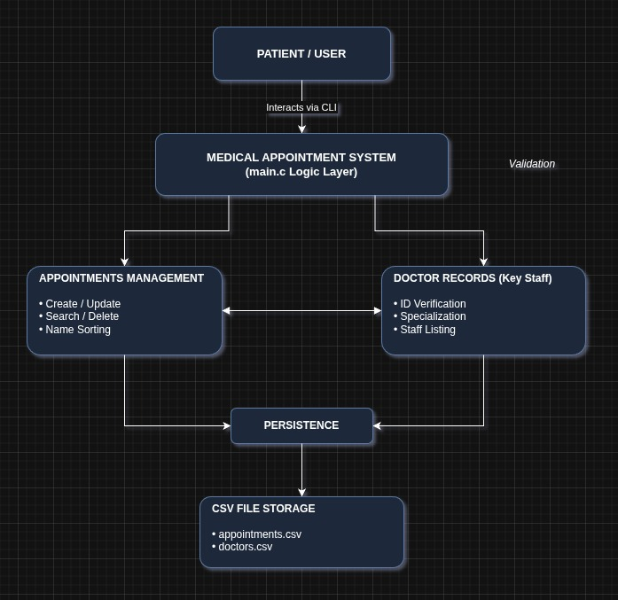
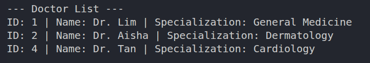
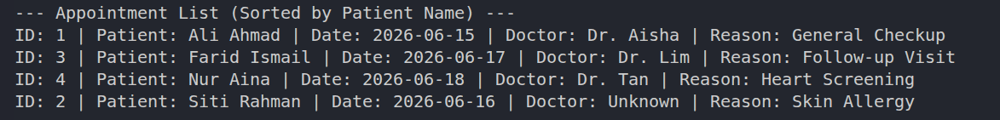
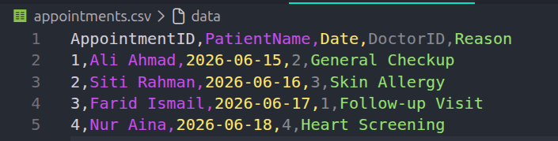

ABDULMAJEED ABDULLAH AHMED BA HADI
AI250042
A C-based scheduling system for Pusat Kesihatan Universiti UTHM that manages patient appointments and doctor records using practical data structure concepts.
Medical Appointment System
AI250042
AI250032
AI250001
AI250036
AI250034
AI250004
The Medical Appointment System was developed to manage patient appointments and doctor records efficiently for Pusat Kesihatan Universiti UTHM.
It provides a menu-driven interface where users can insert, update, delete, search, list, and save appointment records.

Insert, update, delete, list, and search appointment records.
Apply arrays, searching, and sorting techniques.
Provide a clear menu-driven interface for easy interaction.
Save records into CSV files and retrieve them across sessions.
Reduce invalid inputs, empty fields, and common user mistakes.
Appointments may be written manually or stored in basic spreadsheets.
Duplication, missed appointments, slow retrieval, and scheduling conflicts.
Automated CRUD operations, validation, searching, sorting, and CSV storage.
Used to retrieve appointments by ID efficiently.
O(log n)Used for doctor lookup because the doctor list is small.
O(n)Sorts appointment listings alphabetically by patient name.
O(n log n)insertAppointment()Adds a new appointment with validation.
updateAppointment()Updates patient name, doctor ID, and reason.
deleteAppointment()Removes an appointment by ID using array shifting.
listAppointments()Displays appointments sorted alphabetically.
listDoctors()Shows doctor ID, name, and specialization.
saveAppointments()Saves all appointment records to CSV.
MEDICAL APPOINTMENT SYSTEM 1. List Appointments 2. Insert Appointment 3. Update Appointment 4. Delete Appointment 5. List Doctors 6. Exit and Save to CSV Enter your choice: _
List appointments alphabetically by patient name.
Insert and validate patient name, doctor ID, and reason.
Update or delete existing records by appointment ID.
Exit safely and save all data to appointments.csv.

01Listing available doctors.

02Sorted output scheduled.

03Persistent record storage in appointments.csv.
Create a more visual and easier interface for staff.
Improve scalability and enable multi-user access.
Search by patient name or doctor specialization.
Generate appointment statistics and busiest day reports.
The Medical Appointment System successfully demonstrates the practical use of data structures in a real scheduling problem.
The system supports CRUD operations, doctor listing, appointment searching, sorting, validation, and CSV persistence.
Preventing empty and invalid inputs.
Using binary search for faster retrieval.
Improving readability using alphabetical order.
Combining programming, testing, and documentation.
Special thanks to